2024欧洲影记之法国
作为一个不怎么读书的人，欧洲之于我的认知，大多来源于刺客信条1和早就忘得差不多的历史课。
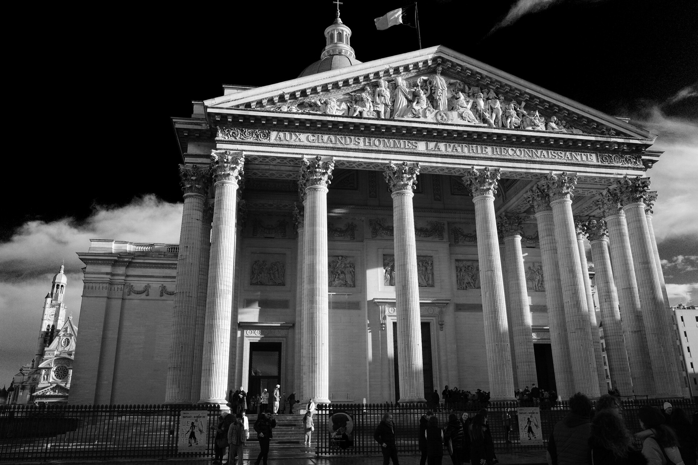
建筑
先贤祠是个意外惊喜的存在，尤其是对建筑感兴趣的人来说。作为古罗马建筑万神庙🏛️的传承，它的英文名与万神庙同为Pantheon。至于为什么中文世界要称它为先贤祠，我不晓得，但这么叫确实有两点好处：一是显而易见的体现了建筑的主要用途和历史地位；再则，不易和在罗马的那座弄混淆2。
没有无人机3的话，想要拍摄建筑大致全貌基本很难。挑选局部，结合构图，兴许会有不错的收获。
身边有朋友总嫌弃我拍黑白照，其实，是你们还不太了解黑白。
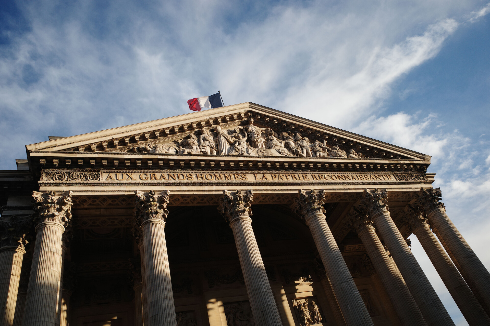
抛开构图不谈，不觉得黑白效果下，线条更为清晰，更抓眼球吗？画面的整体的冲击力都要强不少。
街景
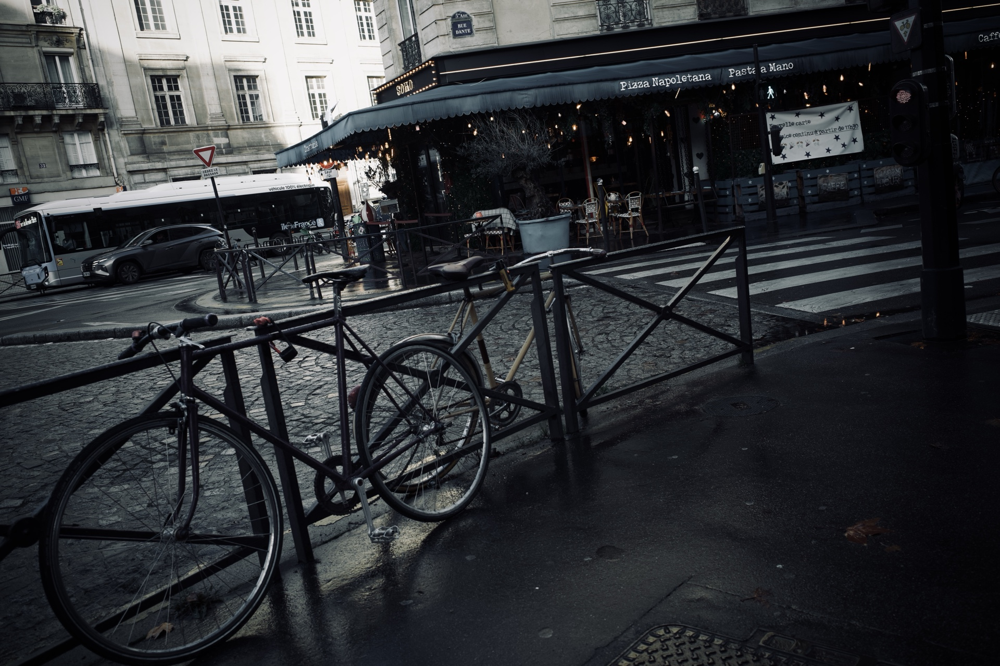
只要是街角，就一定会有餐馆；只要是餐馆，就一定有遮阳（雨）蓬，供客人在外面享受片刻的惬意🚬。
冬天的巴黎，日照很短，体感温度要比实际温度低上好几度。为此，店家会为户外的台位准备盖毯。
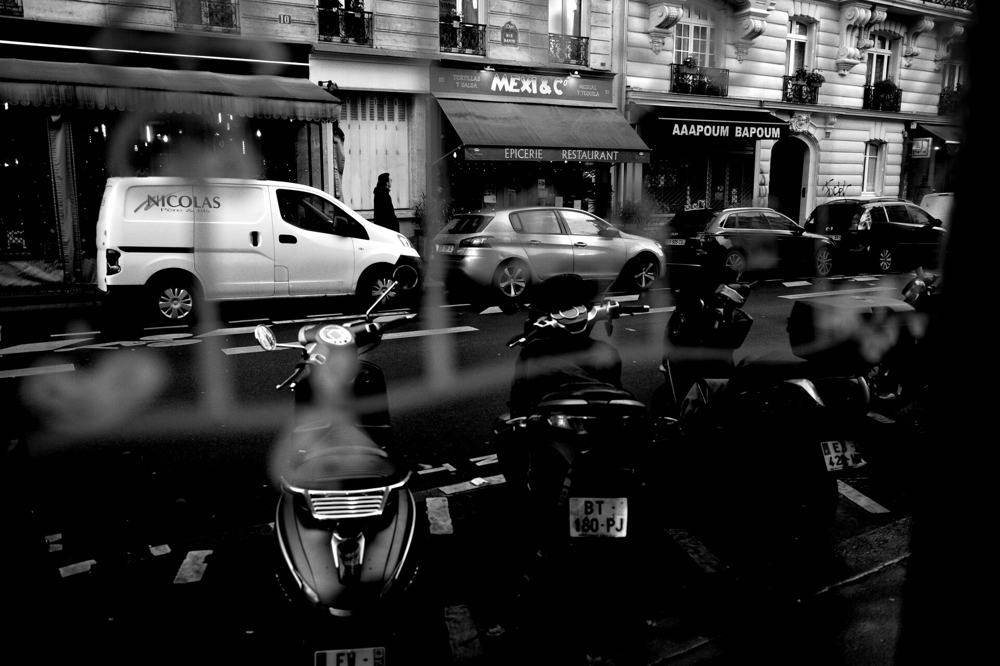
巴黎的街道本就不宽，道两旁基本都设立了停车位，因此单行道特别多。时常出现一辆卸货的卡车堵牢整条街的情况。
日常通勤，两厢小车🚗和摩托车🏍️是非常明智选择。这让我想起谍影重重里，伯恩开着老 Mini 的追逐戏，警察里也只有摩警才能追得上。
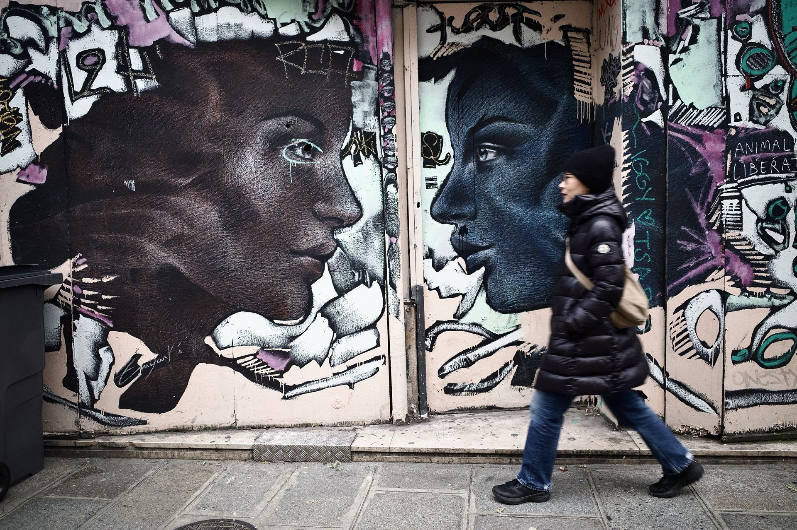
随处可见的涂鸦，大大小小，起初我是意外的。稍许了解一下历史，我才意识到，这也算是某种意义的传统了。
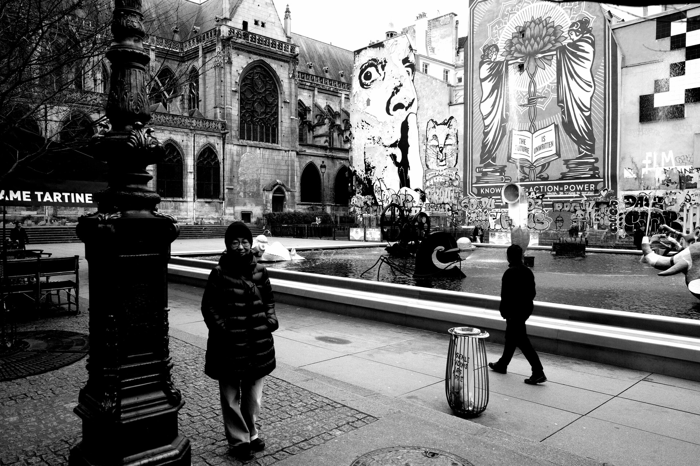
嗯，提到蓬皮杜，那就的来感受一下法国人民的传统艺能。
运动
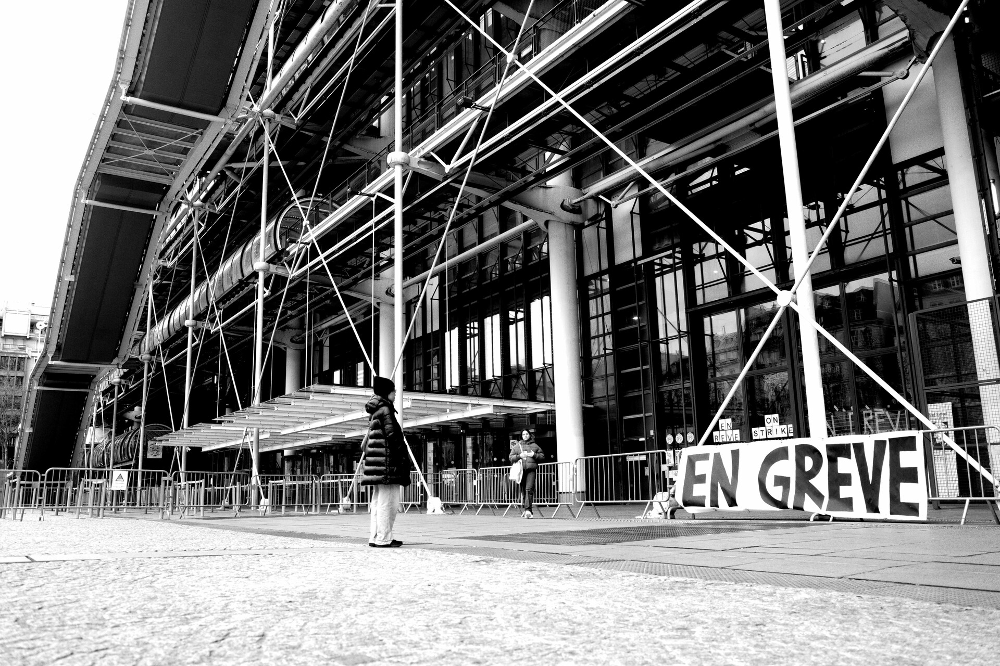
这是此行始料未及的。因为设施陈旧相关部门不予以重视，引起中心工作人员不满而发起罢工。这些细节都写在中心的公示栏上，上面还有二维码，扫码进入罢工网站。可惜，什么时候恢复运营，只字未提。据一位游客口诉，他三天前就来了，罢工已经开始，到现在还没有结束的迹象。
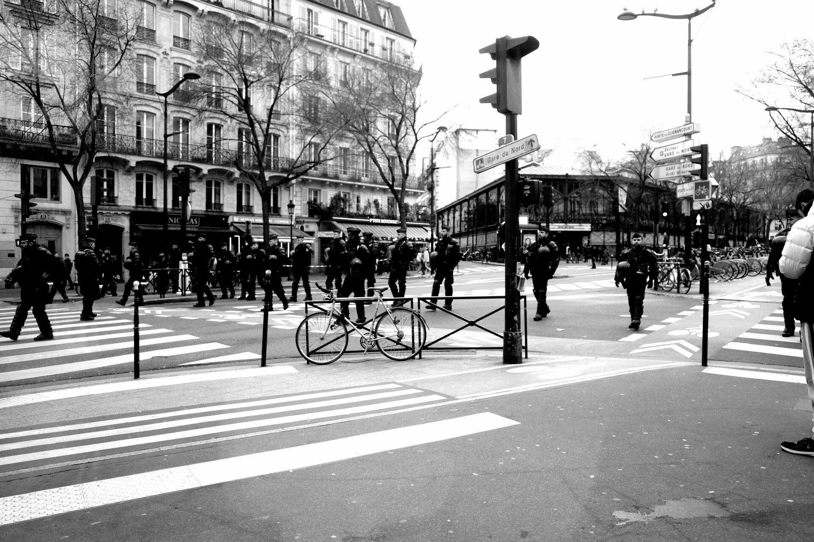
在巴黎的游玩，我们都是靠走的，每天步数轻松上两万，这也让我们有机会亲临游行现场。
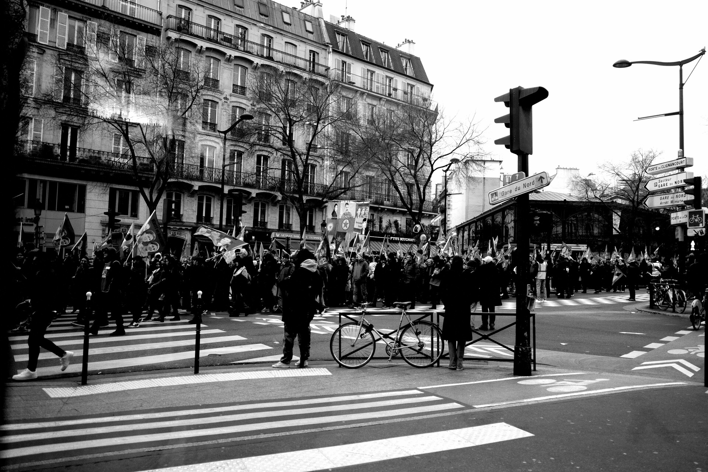
这是一场追念2013年遇难者的活动4，现场安保人数众多。附近街口的还有更多待命警员，好在他们脸上的表情还算轻松，我也就没有那么紧张啦。
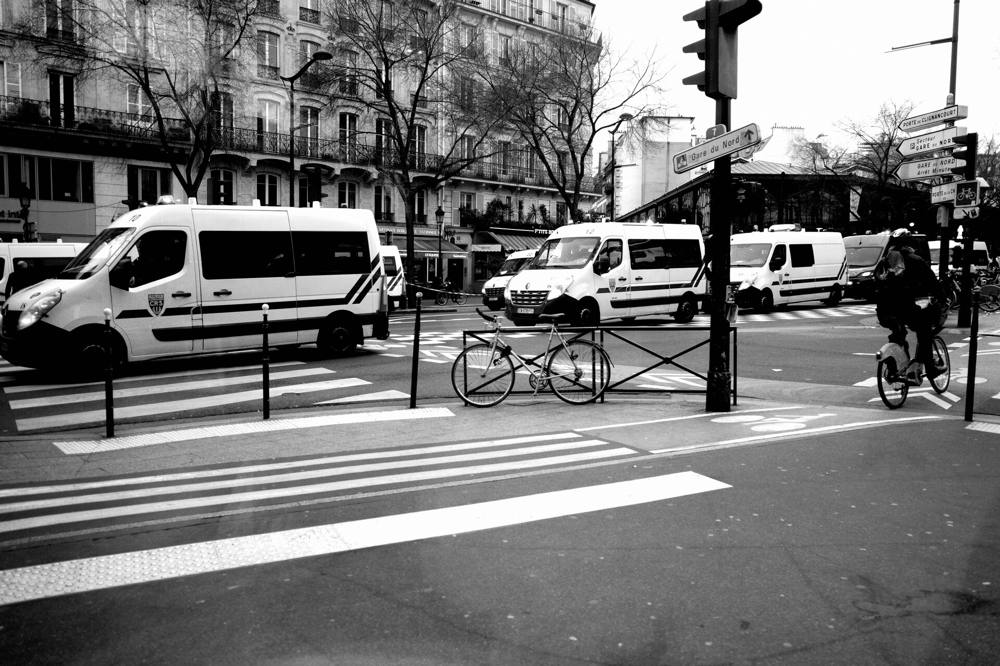
巴黎治安到底如何？我的实际感受是，地铁，景点，以及我们住的红磨坊附近，都是安全的。至少没有碰到某书上的骇人遭遇。
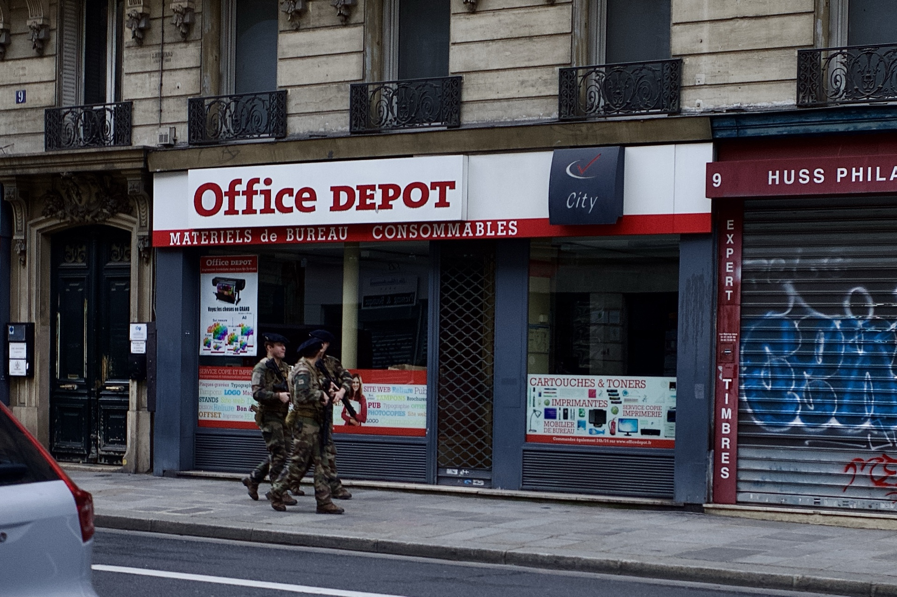
人间烟火
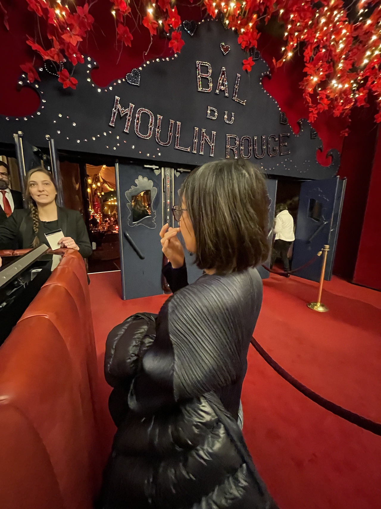
说到住的地方，嗯，这也是个值得所说几句的。原本，我们应该住在卢浮宫附近，但因行程调整，我们向 Booking 申请延住一天。结果因为时差，错过了补差价的系统邮件，导致整个订单被取消了，还不退款。经多番协商，改到红磨坊附近，这个中文互联网上广泛认为治安最差的区域。
从落地戴高乐机场的那一刻开始，我的警觉性一直是拉满的状态，脸上写着“别靠近我，否则我瞪死你”。事实是，一切安好，虚惊一场。也许是运气好吧！酒店的负责人告诉我们，这里是法国艺术文化最浓的区域，非常受各地游客欢迎的。
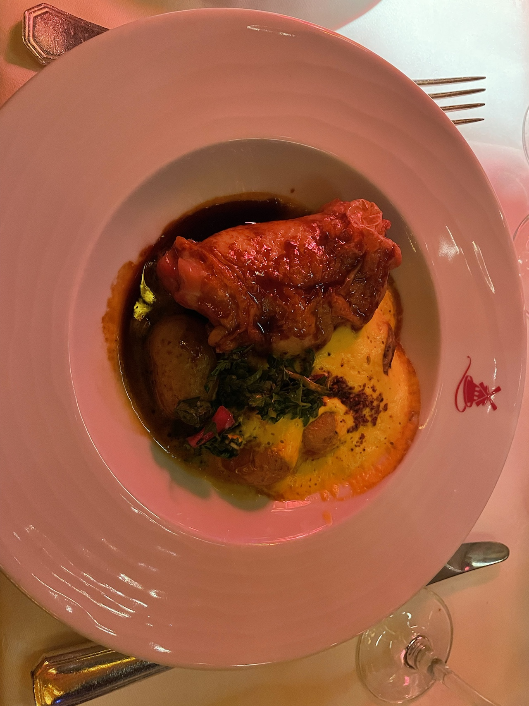
演出是禁止拍摄的，餐食照意思一下吧。非常推荐观看红磨坊的演出，且一定要订含晚餐的票，因为只有含晚餐的票，才能先入场被安排距离舞台更佳的位置。
晚餐安排了有两个小时，期间舞台也是有乐队表演的。舞台正下方有个空出来的区域，是方便客人用餐之余，挥洒激情的舞池。队友再三怂恿，借着酒精壮胆，我勉强陪同入池，画面太美，好在没有留下任何影像证据，唯有记忆。
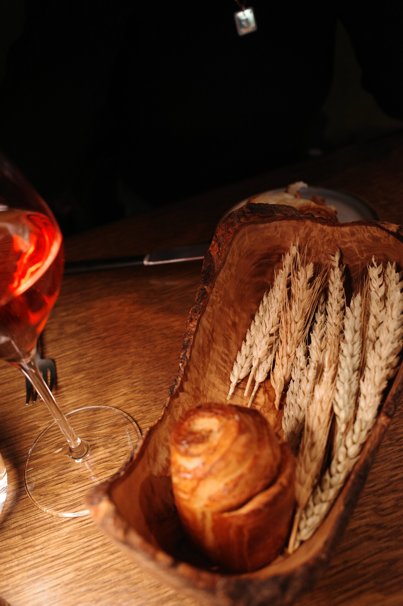
里昂站以北步行不远的地方，有家名叫 Virtus5 小馆子，不起眼容易错过。队友说是家米其林，一定要去尝尝。
味道有多好吃，看人，我觉得还不错。不得不称赞的是，餐厅的灯光布置，餐桌上菜品的摆盘，直出片子就能有 Studio 出品的格调了。
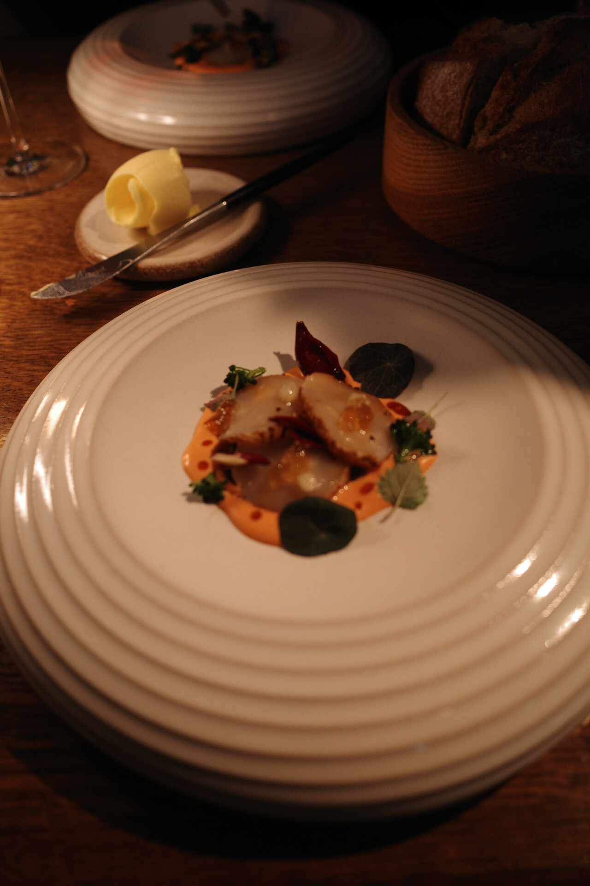
到这，法国差不多，下一篇聊聊瑞士吧。
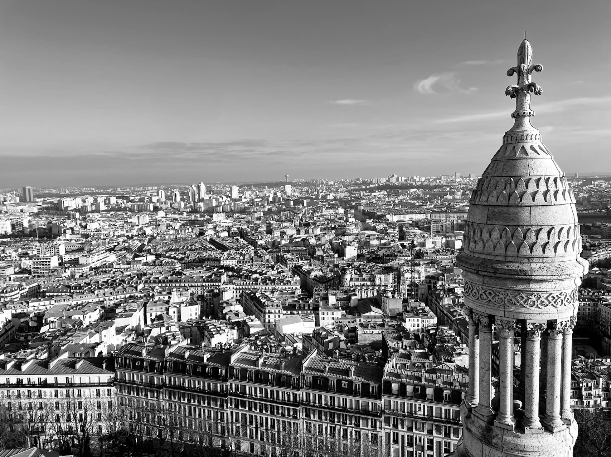